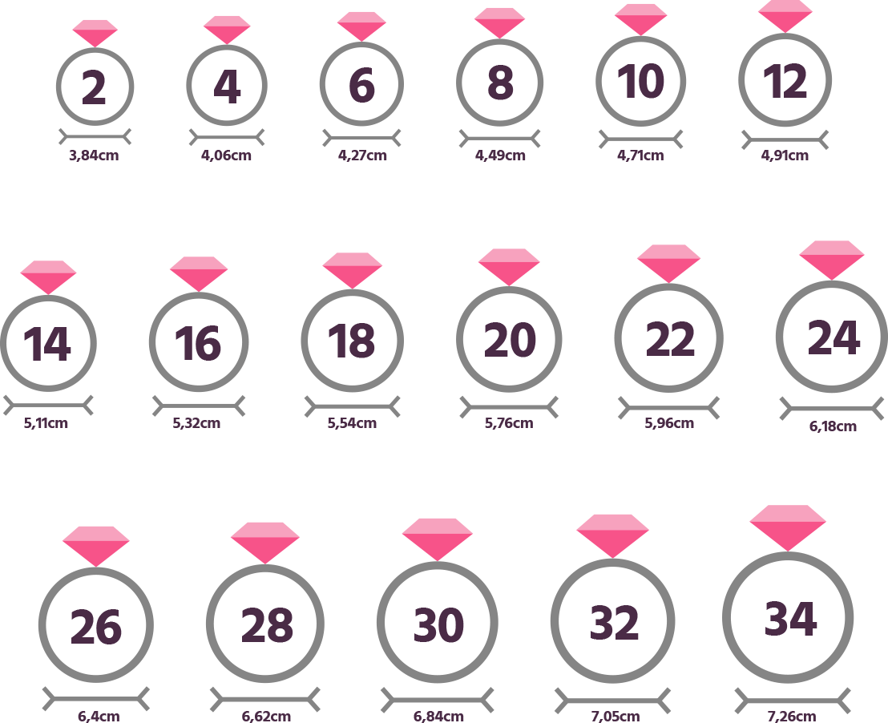
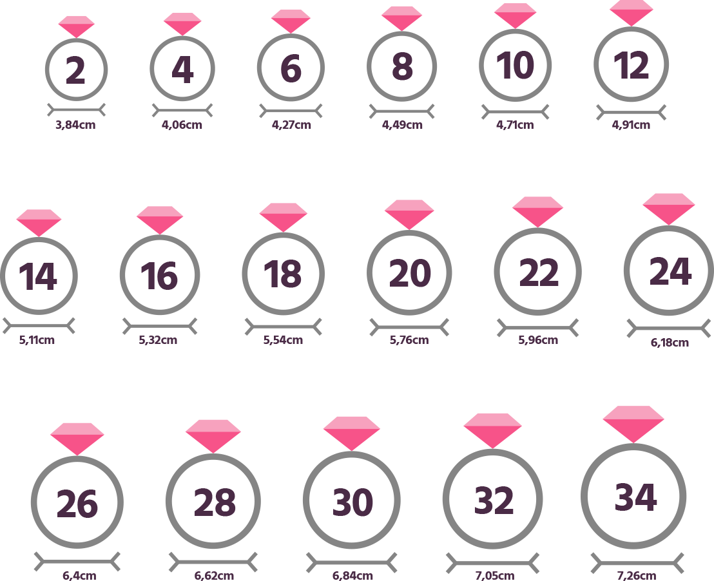

Dúvidas Frequentes
1. Aceitamos as seguintes formas de pagamento:
Cartão de Crédito parcelado em até 10 vezes sem juros. Visa,
Master Card, Diners Club, American Express, Elo, Aura, Hipercard. Boleto Bancário com 10% (por
cento) de desconto, pagamento só a vista.
2. Compra com 2 cartões de crédito
Aceitamos a utilização de 2 (dois) cartões para pagamento.
Para
esta modalidade de compra faça contato pelo (48) 3230-5022 (telefone fixo), ou Whatsapp
(48) 3230-5022.
3. O Anel de formatura é a pronta entrega?
Não possuímos anel de formatura a pronta entrega devido à
grande
variedade de produtos, medidas e cursos que existem. Mas 60% dos modelos são confeccionados em
até
2 dias após confirmação de pagamento.
4. Como é a aprovação da minha compra com cartão de crédito?
Aprovação da compra por cartão de crédito estará sujeitas ao
rigor
da administradora do Cartão de Crédito através do Paypal e Mercado Pago para o boleto á vista
com
10% de desconto. Muito mais rapidez e segurança para comprar aqui.
5. Vem com certificado de garantia ?
Enviaremos junto com suas Joias o Certificado de Garantia e
legitimidade permanente de teor do metal precioso. Todas as informações e devidos
cuidados
com sua joias estão detalhados no Certificado de Garantia.
6. Qual o horário de atendimento ?
Com atendimento: de segunda a sexta feira das
09h30min as 13:00 e das 14:00 as 18h0hs. Aos Sábados plantão de vendas das 9:30 as 13:00.
7. Como saber a medida do meu dedo?
O recomendável para ter a medida exata, seria ir a uma
joalheria. Existem algumas maneiras de tirar medidas em sua residência. Veja a imagem a
baixo
ou a matéria em um Blog para saber mais Click aqui [LINK
PARA O BLOG]

8. Errei a medida posso trocar?
Será necessário abrir um chamado informando o numero do
pedido,
E-mail cadastrado, Modelo e medidas corretas. A assistência técnica tem o prazo de 30 dias
úteis para correção da nova medida. Somos das poucas empresas a fazer isso no Brasil,
nosso
objetivo é garantir o melhor preço sempre.
9. Não gostei do modelo, posso trocar, ou cancelar o pedido?
Segundo Código de Defesa do Consumidor, compras realizadas
pela
internet você tem o prazo de 07 (sete) dias a contar da data do recebimento do
produto para troca, ou cancelamento do pedido caso não esteja satisfeito com a mercadoria, o
produto
deve ser devolvido sem avarias ou sinais de uso.
10. Como posso cancelar meu pedido?
Faça contato com um de nossos canais de atendimentos para
solicitação do cancelamento: Telefone fixo, Whasapp. Informando o motivo do
cancelamento, e dados, como RG, CPF e N° do pedido.
11. Fotos dos produtos meramente ilustrativas.
Cliente amigo(a) todas as fotos são meramente ilustrativa,
veja o
descritivo antes de comprar.
1. Aceitamos as seguintes formas de pagamento:
Cartão de Crédito parcelado em até 10 vezes sem juros. Visa, Master Card, Diners Club, American Express, Elo, Aura, Hipercard. Boleto Bancário com 10% (por cento) de desconto, pagamento só a vista.
2. Compra com 2 cartões de crédito
Aceitamos a utilização de 2 (dois) cartões para pagamento. Para esta modalidade de compra faça contato pelo (48) 3230-5022 (telefone fixo), ou Whatsapp (48) 3230-5022.
3. O Anel de formatura é a pronta entrega?
Não possuímos anel de formatura a pronta entrega devido à grande variedade de produtos, medidas e cursos que existem. Mas 60% dos modelos são confeccionados em até 2 dias após confirmação de pagamento.
4. Como é a aprovação da minha compra com cartão de crédito?
Aprovação da compra por cartão de crédito estará sujeitas ao rigor da administradora do Cartão de Crédito através do Paypal e Mercado Pago para o boleto á vista com 10% de desconto. Muito mais rapidez e segurança para comprar aqui.
5. Vem com certificado de garantia ?
Enviaremos junto com suas Joias o Certificado de Garantia e legitimidade permanente de teor do metal precioso. Todas as informações e devidos cuidados com sua joias estão detalhados no Certificado de Garantia.
6. Qual o horário de atendimento ?
Com atendimento: de segunda a sexta feira das 09h30min as 13:00 e das 14:00 as 18h0hs. Aos Sábados plantão de vendas das 9:30 as 13:00.
7. Como saber a medida do meu dedo?
O recomendável para ter a medida exata, seria ir a uma joalheria. Existem algumas maneiras de tirar medidas em sua residência. Veja a imagem a baixo ou a matéria em um Blog para saber mais Click aqui [LINK PARA O BLOG]
8. Errei a medida posso trocar?
Será necessário abrir um chamado informando o numero do pedido, E-mail cadastrado, Modelo e medidas corretas. A assistência técnica tem o prazo de 30 dias úteis para correção da nova medida. Somos das poucas empresas a fazer isso no Brasil, nosso objetivo é garantir o melhor preço sempre.
9. Não gostei do modelo, posso trocar, ou cancelar o pedido?
Segundo Código de Defesa do Consumidor, compras realizadas pela internet você tem o prazo de 07 (sete) dias a contar da data do recebimento do produto para troca, ou cancelamento do pedido caso não esteja satisfeito com a mercadoria, o produto deve ser devolvido sem avarias ou sinais de uso.
10. Como posso cancelar meu pedido?
Faça contato com um de nossos canais de atendimentos para solicitação do cancelamento: Telefone fixo, Whasapp. Informando o motivo do cancelamento, e dados, como RG, CPF e N° do pedido.
11. Fotos dos produtos meramente ilustrativas.
Cliente amigo(a) todas as fotos são meramente ilustrativa, veja o descritivo antes de comprar.